Manual de uso
Apunta App Móvil
Todo lo que necesitas para fotografiar tus facturas, revisarlas y mandárselas a tu gestor.
⬇ Descargar el manual en PDFApunta... Y olvídate.
Versión 1.5.0 · Septiembre de 2026
Capítulo 1
Para qué sirve Apunta App
Apunta App guarda tus facturas y tus tickets según te los dan, y te los tiene ordenados para cuando toque presentar el trimestre.
Haces una foto. La app lee el papel y rellena sola la fecha, el NIF del proveedor, la base, el IVA y el total. Tú le echas un vistazo, corriges lo que haga falta y ya está: ese gasto queda guardado en su trimestre. Al final del trimestre pulsas Exportar y se lo mandas a tu gestor por WhatsApp, por correo o como quieras. Él recibe todo junto y ordenado: un PDF con el listado, un Excel con los números y las fotos de todas las facturas. Se acabaron la caja de zapatos y el sobre de tickets arrugados.
Tres cosas que conviene saber desde el principio: todo se queda en tu móvil (no hay registro, ni cuenta, ni contraseña, ni nube; tus facturas no salen de tu teléfono hasta el día que tú decides mandárselas a tu gestor); se paga una vez, sin cuota mensual; y funciona sin cobertura, porque la app lee el papel ella sola.
Lo que Apunta App no hace: no emite facturas a tus clientes, no presenta modelos a Hacienda y no sustituye a tu gestor. Lo que hace es llevarle el trabajo hecho.
Capítulo 2
La primera vez que la abres
Al abrir Apunta App por primera vez te encuentras con esta pantalla. No te pide registrarte, ni un correo, ni una contraseña: no hay ninguna cuenta que crear.
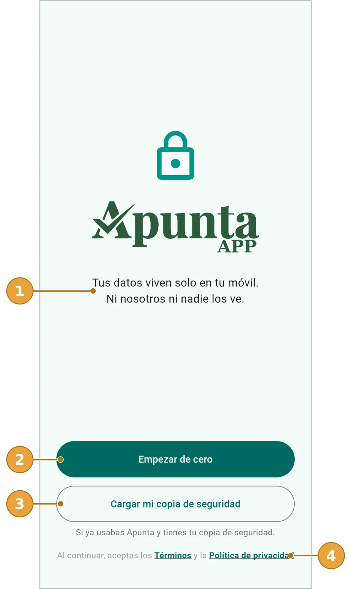
1«Tus datos viven solo en tu móvil». Es la promesa de la app: lo que apuntas se queda en este teléfono y nadie más lo ve.
2Empezar de cero. Si es la primera vez que usas Apunta App, pulsa aquí.
3Cargar mi copia de seguridad. Si ya usabas la app en otro móvil, o la has vuelto a instalar, y tienes tu copia, pulsa aquí para recuperar tus apuntes. → capítulo 10
4Términos y Política de privacidad. Al continuar, los aceptas. Si quieres leerlos antes, púlsalos.
Consejo
Lo primero que conviene hacer: entra en Ajustes y escribe tu nombre y tu NIF. Son los datos con los que tu gestor sabrá de quién es cada exportación. → capítulo 9
Capítulo 3
Hacer una foto a una factura
Todo empieza en la pantalla de Inicio, en ¿Qué quieres apuntar?. Tienes dos botones grandes, uno para cada cosa. Pulsas el que toca y se abre la cámara. No necesitas cobertura: la lectura la hace el propio teléfono, así que puedes apuntar un ticket en un aparcamiento subterráneo o en mitad del campo.
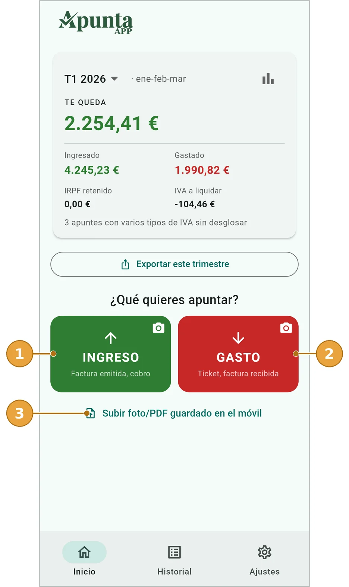
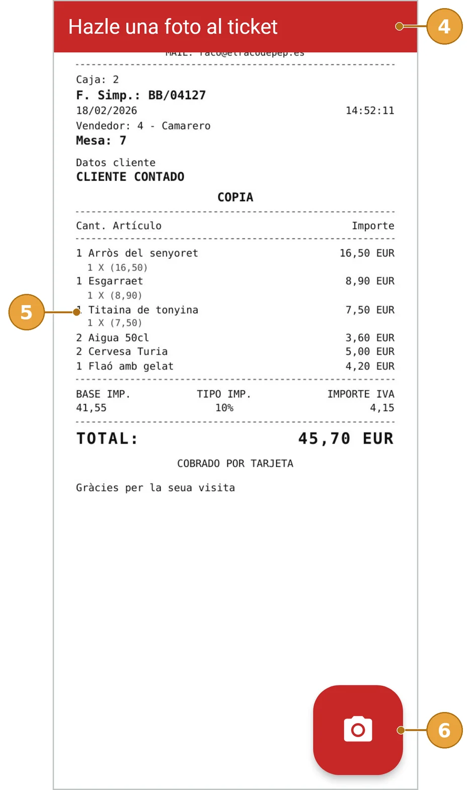
1INGRESO. Para lo que cobras: una factura que tú has hecho a un cliente, un cobro.
2GASTO. Para lo que pagas: un ticket, una factura que te han hecho a ti.
3Subir foto/PDF guardado en el móvil. Para cuando la factura no está en papel: te ha llegado en PDF por correo, o ya tenías la foto hecha. → capítulo 5
4Lo que estás apuntando. Arriba, la app te recuerda qué va a leer.
5El papel, en el visor. Encuádralo entero, que se vean bien la fecha, los importes y el total.
6El botón de disparar. Lo pulsas y la app se pone a leer.
Consejo
Para que la app lea bien: el papel plano y estirado, buena luz y sin sombras encima, el ticket entero dentro del visor y el móvil quieto. Y hazle la foto a los tickets el mismo día: los de papel térmico se borran con el tiempo.
Después de la foto pasas a la pantalla de revisión, que es la del capítulo siguiente.
Capítulo 4
Lo que Apunta App ha entendido (y cómo lo corriges)
Después de la foto, la app te enseña lo que ha leído y te pregunta si está bien. Arriba tienes el papel y debajo los datos que ha sacado de él, así comparas de un vistazo sin cambiar de pantalla. Tú revisas, completas lo que falte, corriges lo que haga falta y guardas.
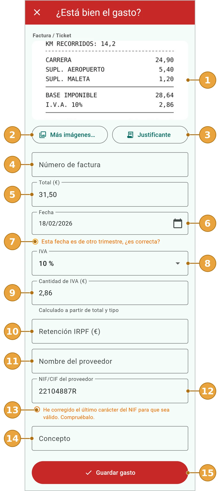
1La foto. Tu ticket o tu factura. Compara con ella cada dato de debajo.
2Más imágenes/fotos. Añade más páginas del mismo documento, hasta 10, con la cámara, desde la galería o en PDF. No se leen ni suman importe.
3Justificante. Solo en los gastos: el justificante del pago, por ejemplo el recibo de la tarjeta. Tampoco suma, y lo puedes cambiar o quitar.
4Número de factura. En un gasto lo escribes tú: la app no lo lee.
5Total. El importe total, con el IVA incluido.
6Fecha. Con el calendario la cambias.
7«Esta fecha es de otro trimestre». Lo explicamos más abajo.
8IVA. El tipo; aquí, un 10 %.
9Cantidad de IVA. La cuota. Compárala con la del papel.
10Retención IRPF. Solo si la factura lleva retención. En un ticket normal se deja vacía.
11Nombre del proveedor. Lo escribes tú: la app no lo lee.
12NIF/CIF del proveedor. Este sí lo lee la app.
13Aviso del NIF. Lo explicamos más abajo.
14Concepto. Una descripción corta que escribes tú: «Taxi al aeropuerto».
15Guardar gasto. En un ingreso pone «Guardar factura», y al corregir un apunte, «Guardar cambios».
Atención
Sin fecha o sin % de IVA, la app no te deja guardar. Son los dos datos sin los que un apunte no le sirve a tu gestor.
Los avisos en naranja
Cuando la app no está segura de algo, no se lo inventa: te lo dice con un aviso en naranja justo debajo del dato. Hay cuatro: «No he sabido leer la fecha», «Esta fecha es de otro trimestre», «No he sabido leer el % de IVA» y «He corregido el último carácter del NIF».
Atención
Mira todas las casillas, no solo las que tienen aviso. Lo que la app no ha sabido leer y no está en esa lista (el número de factura, el NIF, la retención o el total) lo deja vacío, sin avisar.
Esta es la factura de un seguro, que no lleva IVA:
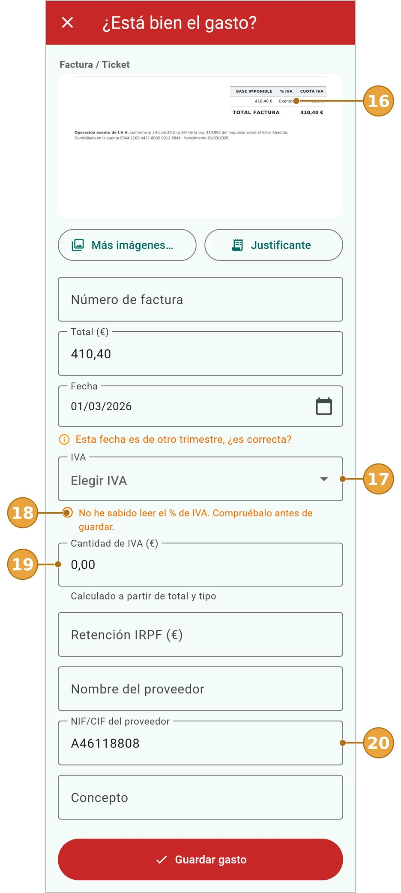
16En el papel pone «Exento». Los seguros no llevan IVA.
17«Elegir IVA». La app no ha sabido qué tipo poner y lo ha dejado sin elegir.
18«No he sabido leer el % de IVA». La app solo entiende números, y la palabra «Exento» no la convierte. Abre el desplegable y elige la opción que corresponda a una factura exenta.
19Cantidad de IVA: 0,00. No la ha leído del papel: es lo que pone la app mientras no hay un tipo elegido.
20NIF del proveedor. Leído sin problemas.
El aviso «Esta fecha es de otro trimestre»
La app compara la fecha del papel con la de hoy. En las dos pantallas de arriba sale porque son facturas de febrero y marzo, del primer trimestre, apuntadas en septiembre, que ya es el tercero.
Casi siempre quiere decir una de dos cosas: que estás apuntando una factura atrasada, o que la app ha leído mal la fecha (un año por otro, un mes por otro). Mira la fecha del papel. Si está bien, no toques nada: el apunte se guarda en el trimestre que le corresponde por su fecha. Si está mal, corrígela.
Atención
Ojo con las facturas atrasadas. Si ya le mandaste a tu gestor el trimestre de esa factura, el apunte nuevo no le llega solo. Díselo, o vuelve a exportarle ese trimestre. → capítulo 8
El aviso del NIF
Todo NIF lleva una letra de control al final. Si al leerlo la app ve que esa letra no cuadra con los números, la corrige y te avisa. Compara el NIF con el del papel: si coincide, déjalo como está; si no, escríbelo bien.
Cómo lee Apunta App tu factura
La app no entiende la factura como la entenderías tú. Primero, el teléfono convierte la foto en texto, renglón a renglón: es lo que se llama OCR (reconocimiento óptico de caracteres). Después, la app busca en ese texto las palabras y los números que le interesan. Por eso lo que acierta o falla depende sobre todo de qué palabras lleva el papel y de lo bien que se lean.
Lo que ve el teléfono
Este es el ticket del taxi y, a su lado, el texto que ha sacado de él el teléfono. Fíjate en que no hay columnas, ni negritas, ni recuadros: solo renglones de letras y números. De ahí saca la app cada dato.
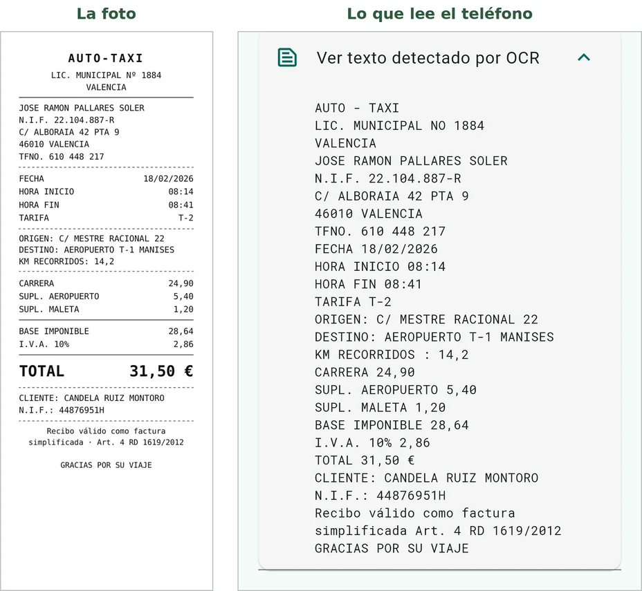
Consejo
Tú también puedes verlo. En la pantalla de revisión, baja hasta el final, por debajo de «Guardar gasto», y pulsa Ver texto detectado por OCR. Se despliega el texto que ha leído el teléfono. Si una casilla ha salido vacía o rara, ahí ves por qué.
El total. Busca «TOTAL», «IMPORTE TOTAL» o «A PAGAR» y el importe que va al lado. Si hay varios, descarta los de «entregado» y «cambio» y se queda con el más alto.
La fecha. La primera fecha válida del papel, escrita como 18/02/2026, 2026-02-18 o «18 de febrero de 2026». Descarta las de hace más de diez años y las del futuro.
El IVA. Primero intenta que cuadren tres números del papel: la base por el tipo da la cuota, y la base más la cuota da el total. Si cuadran, se fía de los tres. Si no, busca un número detrás de la palabra «IVA». Solo acepta los tipos españoles: 21, 10, 4 y 0 %.
La retención. El primer importe que va detrás de «IRPF», «Retención» o «Ret.».
El NIF del proveedor. Prefiere el que lleva delante «NIF», «CIF» o «DNI», comprueba la letra y se salta el tuyo. Por eso conviene tener tu NIF en Ajustes. → capítulo 9
Lo que no lee en un gasto: el nombre del proveedor, el concepto y el número de factura. Esos los escribes tú.
La foto no se retoca. La app solo la endereza; no la aclara ni la mejora. Aguanta un papel algo torcido, pero si el teléfono no llega a ver un número, esa casilla sale vacía o con aviso. Por eso importa tanto hacer bien la foto. → capítulo 3
Un PDF con texto se lee directamente. Si subes un PDF que ya trae el texto dentro, como muchas facturas que llegan por correo, la app no tiene que leer la imagen: usa ese texto tal cual.
Dos ejemplos de verdad
Estas son las lecturas reales del ticket del taxi y de la factura del seguro. En verde, lo que la app ha usado; en naranja, de dónde sale un aviso o un hueco; en gris punteado, lo que la app ve y deja fuera a propósito.
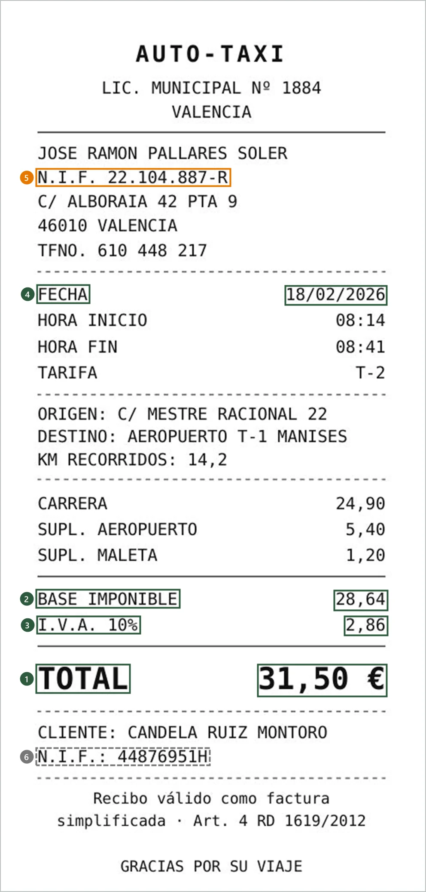
1Total, 31,50 €. De la palabra TOTAL y el importe de su línea.
2Base, 28,64 €, leída del papel.
3IVA, 10 % y 2,86 €. La cuenta cuadra: 28,64 × 10 % = 2,86, y 28,64 + 2,86 = 31,50. Por eso la app se fía de los tres números.
4Fecha, 18/02/2026. La primera fecha válida del papel.
5NIF del taxista, 22104887R. El papel lo escribe con puntos y la app avisa de que ha corregido la letra. La letra ya estaba bien: como coincide con el papel, se deja así.
6El NIF de Candela. Es el suyo, el que tiene en Ajustes, así que la app lo salta y se queda con el del taxista.
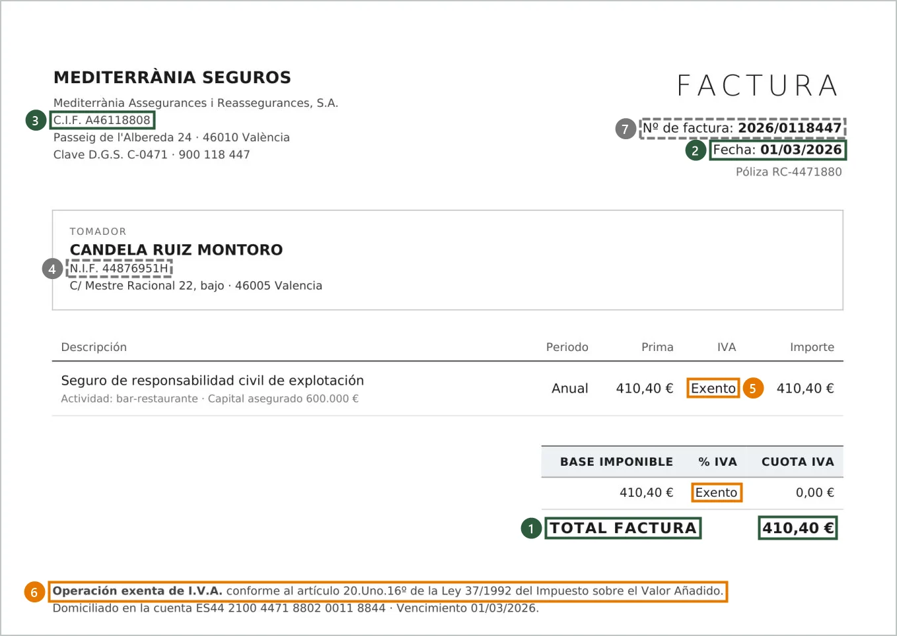
1Total, 410,40 €. De TOTAL FACTURA y el importe de su línea.
2Fecha, 01/03/2026.
3CIF del proveedor, A46118808. El número sale limpio y la letra de control cuadra.
4El NIF de Candela, que la app salta.
5«Exento». La app solo entiende un número como tipo de IVA; la palabra no la convierte en exento. Por eso el % queda vacío y sale el aviso.
6«exenta de I.V.A. … artículo 20». El primer número detrás de «I.V.A.» es el 20 del artículo. Un 20 % no es un IVA español, así que lo descarta.
7Número de factura. En un gasto no lo lee: lo escribes tú.
Cuando la foto no sale bien
El teléfono lee lo que ve. Si la foto sale oscura, movida o borrosa, confunde letras y números: un 0 por una O, un 10 % por un 18 %, un 1,20 por un 1,26. Para enseñarlo, hemos cogido la foto buena del taxi y la hemos estropeado a propósito de ocho maneras. Todas se han pasado por el mismo lector que usa la app.
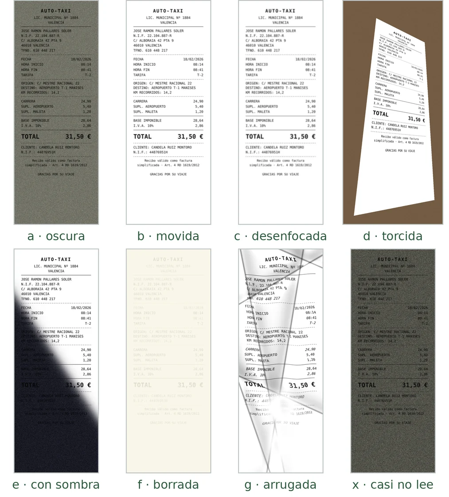
| Foto | Lo que leyó mal el teléfono | Lo que pasa en la revisión |
|---|---|---|
| a · oscura | «1,20» → «1,26» · «JOSE» → «J0SE», con un cero | El NIF sale vacío, sin aviso. |
| b · movida | «I.V.A. 10%» → «I.V.A. 18%» · «24,90» → «24,98» | Todo bien: la app saca el 10 % de las cuentas del ticket, no de ese renglón. |
| c · desenfocada | «10%» → «10», sin el % · «BASE IMPONIBLE» → «BASE IHPONTBLE» | El NIF sale vacío, sin aviso. |
| d · torcida | La fecha acaba en otro renglón y como «18/82/2826» | La fecha sale vacía, con aviso. |
| e · con sombra | Bajo la sombra se pierden los rótulos: de «I.V.A. 10% 2,86» solo queda «2,86» | El % de IVA, sin elegir y con aviso; la cantidad de IVA, a 0,00. |
| f · borrada | «JOSE» → «30SE» · «31,50 €» → «31,50 e» | El NIF sale vacío, sin aviso. |
| g · arrugada | «Recibo válido como factura» → «Recib0 actura» · «46010» → «46019» | La fecha sale vacía, con aviso. |
| x · casi no lee | Solo 10 renglones de 26 · «TOTAL 31,50 €» → «TOTAL 31 50€» · la fecha, «1662/2026» | Total 50,00 €, sin aviso. Fecha y % de IVA vacíos, con aviso. NIF vacío. |
La última es la que más enseña. El teléfono leyó «31 50» con un espacio en lugar de la coma, y la app se quedó con el 50. La fecha y el IVA salen vacíos y avisados, pero el total sale mal y sin aviso:
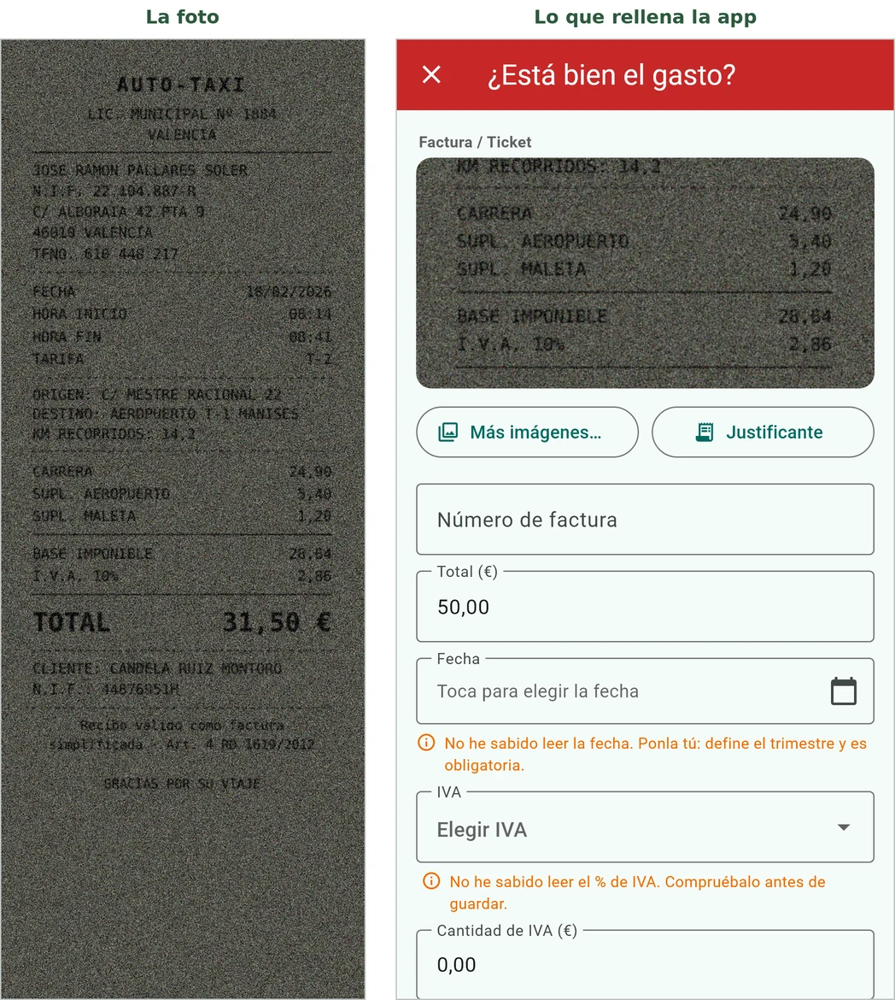
Atención
Compara siempre el total con el papel antes de guardar. Si el teléfono lee mal un importe, la app no tiene forma de saberlo: lo pone tal cual, sin aviso.
Por qué falla, y cómo evitarlo
El lector aguanta bastante. En las pruebas, una sombra sin más, un ticket algo arrugado o un poco torcido se leyeron bien. Lo que más le cuesta es la poca luz, sobre todo con el grano que sale en las fotos oscuras, la foto movida o desenfocada y el papel borrado. Cuando falla, casi siempre es por la foto, no por la app.
Consejo
Para una buena foto: busca buena luz y que no caiga tu sombra ni la del móvil sobre el papel. Pon el ticket plano y estirado, y hazle la foto de frente, no de lado. Espera a que se vea nítido en la pantalla y aguanta el móvil quieto al disparar. Y a los tickets de papel térmico hazles la foto el mismo día, antes de que se borren.
Si ves muchas casillas vacías o muchos avisos, suele compensar repetir la foto antes que escribirlo todo a mano. Y si un dato sale mal, escríbelo tú: el papel manda.
Consejo
La app prefiere dejar un hueco a inventarse un dato. Un aviso o una casilla vacía no es un fallo: es la app diciéndote dónde mirar.
Capítulo 5
¿Ingreso o gasto?
Apunta App lleva por separado lo que cobras y lo que pagas, porque para tu gestor son dos libros distintos: el de ingresos y el de gastos.
Ingreso es lo que tú facturas o cobras: una factura que haces a un cliente. Gasto es lo que pagas: el ticket de la gasolina, la factura del seguro, una comida de trabajo.
Si empiezas desde los botones grandes de Inicio, ya se lo dices al pulsar INGRESO o GASTO. → capítulo 3
Cuando subes una foto o un PDF que ya tenías en el móvil, la app no sabe qué es, así que te lo pregunta con esta ventana:
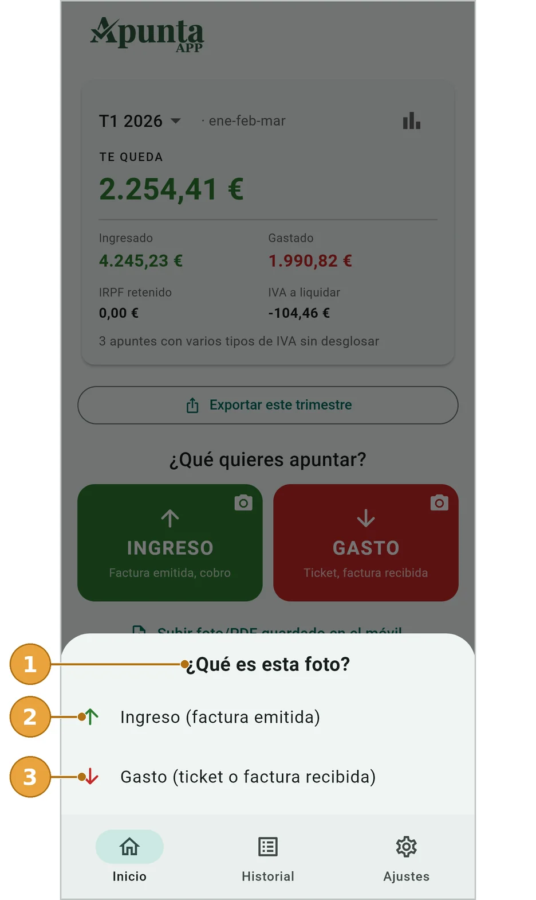
1¿Qué es esta foto? La app necesita saberlo antes de leerla.
2Ingreso (factura emitida). Una factura que has hecho tú.
3Gasto (ticket o factura recibida). Algo que has pagado tú.
Consejo
Una regla fácil: si la factura la has hecho tú, es un ingreso. Si te la han hecho a ti y has pagado tú, es un gasto.
Luego los distingues de un vistazo: en la revisión, la cabecera de un gasto sale en rojo («¿Está bien el gasto?»), y en el historial los ingresos llevan una flecha verde hacia arriba y los gastos una flecha roja hacia abajo. → capítulo 7
Capítulo 6
Tu trimestre de un vistazo
Arriba de la pantalla de Inicio tienes cómo va el trimestre, sin hacer ninguna cuenta.
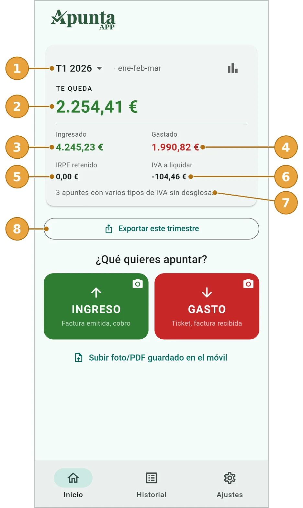
1El trimestre. T1 2026 son enero, febrero y marzo. Pulsa la flecha para ver otro.
2Te queda. Lo que has ingresado menos lo que has gastado: 4.245,23 − 1.990,82 = 2.254,41 €.
3Ingresado. La suma de tus ingresos del trimestre.
4Gastado. La suma de tus gastos.
5IRPF retenido. Lo que te han retenido de IRPF en tus facturas.
6IVA a liquidar. El IVA que has cobrado en tus facturas menos el que has pagado en tus gastos.
7Apuntes con varios tipos de IVA. Lo explicamos más abajo.
8Exportar este trimestre. → capítulo 8
Atención
«Te queda» no es lo que ganas limpio. Es una resta de totales, con el IVA dentro, y no descuenta los impuestos que te toque pagar. Te sirve para saber cómo va el trimestre; las cuentas de verdad las hace tu gestor.
Si el IVA a liquidar sale en negativo
Como en el ejemplo (−104,46 €), quiere decir que este trimestre has pagado más IVA en tus gastos del que has cobrado en tus facturas. Qué se hace con esa diferencia lo decide tu gestor.
«Apuntes con varios tipos de IVA sin desglosar»
Algunos papeles llevan varios tipos de IVA a la vez; por ejemplo, un ticket del supermercado con productos al 4 %, al 10 % y al 21 %. Cuando la app ve dos tipos o más, pone «Varios» en el IVA y deja vacía la cantidad de IVA, para que escribas tú la suma de todas las cuotas. En la app no se reparte por tipos: eso lo hace tu gestor con la foto delante. Si dejas la cantidad vacía, el apunte queda «sin desglosar».
Consejo
Escribe la suma de las cuotas. Suele venir en el propio ticket, en el cuadro de los impuestos. Así el apunte deja de estar «sin desglosar».
Atención
Mientras quede algún apunte sin desglosar, la cifra de IVA a liquidar está incompleta: no incluye el IVA de esos apuntes.
Capítulo 7
Buscar un apunte
Todos tus apuntes están en Historial, en la barra de abajo. Para dar con uno, lo más rápido es ir acotando: primero el trimestre y luego si es un gasto o un ingreso.
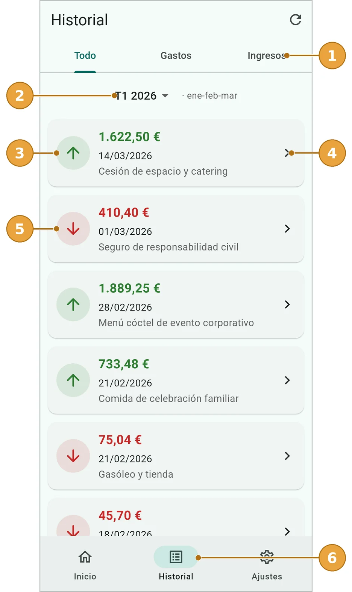
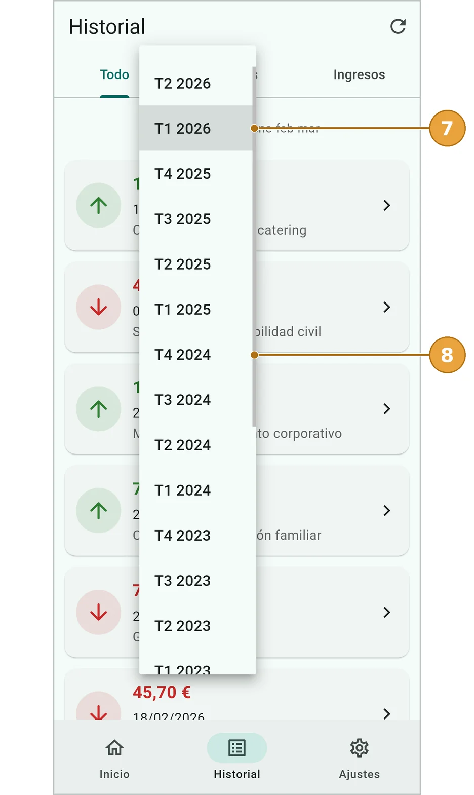
1Todo, Gastos, Ingresos. Para verlo todo junto o solo una de las dos cosas.
2El trimestre. Púlsalo para elegir otro.
3Un ingreso. Flecha verde hacia arriba e importe en verde.
4Abrir el apunte. Pulsa en cualquier apunte para abrirlo, ver su foto o corregir un dato.
5Un gasto. Flecha roja hacia abajo e importe en rojo.
6Historial, en la barra de abajo. Desde aquí vas también a Inicio y a Ajustes.
7La lista de trimestres. El que estás viendo sale resaltado.
8Trimestres anteriores. Puedes bajar hasta los de años pasados.
Cada apunte te enseña su importe, su fecha y el concepto. La lista va ordenada por fecha, del más reciente al más antiguo.
Capítulo 8
Exportar: mandárselo a tu gestor
Al final del trimestre, en Inicio pulsas Exportar este trimestre y se abre esta pantalla. → capítulo 6
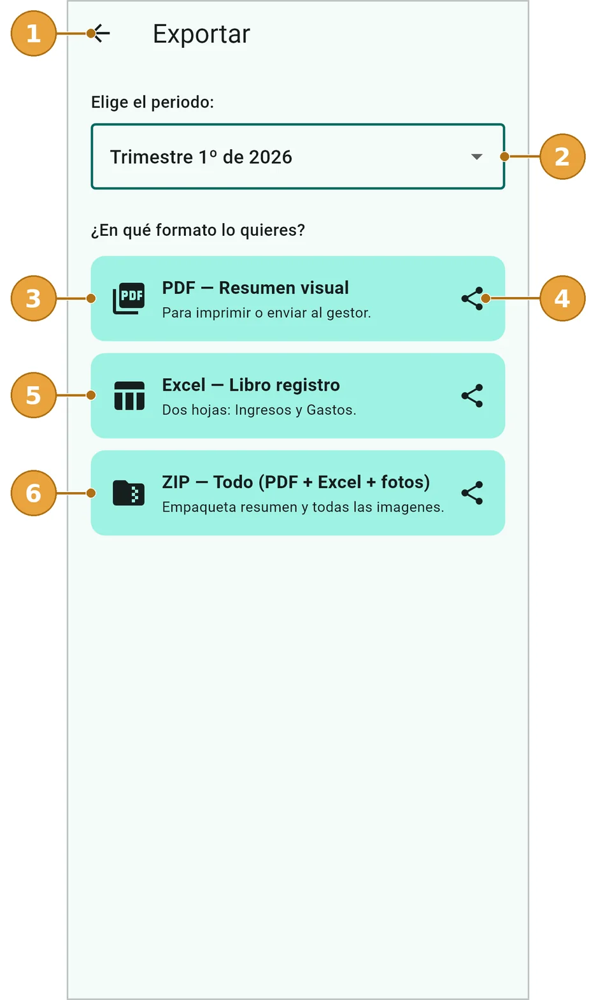
1Volver, sin exportar nada.
2Elige el periodo. Comprueba que es el trimestre que quieres mandar; si no, cámbialo aquí.
3PDF — Resumen visual. Para imprimir o para mandárselo al gestor.
4Compartir. Al pulsar un formato, el teléfono abre su ventana de compartir.
5Excel — Libro registro. Con dos hojas: Ingresos y Gastos.
6ZIP — Todo. El PDF, el Excel y las fotos de todas las facturas, en un solo fichero.
Pulsa el formato que quieras. El teléfono abre su propia ventana de compartir, la misma que usas para mandar una foto, y desde ahí eliges cómo mandarlo: WhatsApp, correo o lo que uses con tu gestor.
Consejo
Si dudas, manda el ZIP. Lleva todo junto: el PDF, el Excel y las fotos de todas las facturas. Con él, tu gestor lo tiene todo.
Lo que recibe tu gestor
Estos son los ficheros de verdad que genera la app, abiertos en un ordenador. Son los del ejemplo: los 11 apuntes del primer trimestre de 2026 de Candela Ruiz Montoro.
El PDF
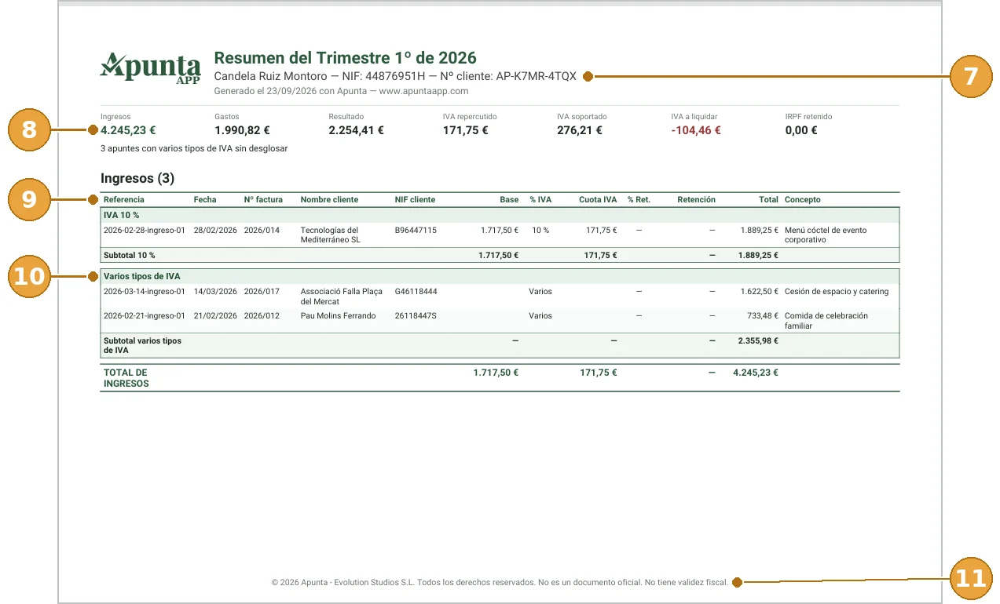
7De quién y de qué. Tu nombre, tu NIF y tu número de cliente, el trimestre y el día en que se generó.
8El resumen. Ingresos, gastos, resultado, IVA repercutido y soportado, IVA a liquidar e IRPF retenido.
9La referencia de cada apunte. Fecha, tipo y número de orden, por ejemplo 2026-02-28-ingreso-01. Es la misma que lleva el nombre de su foto.
10«Varios tipos de IVA». Los apuntes sin desglosar, en su propio grupo. → capítulo 6
11No es un documento oficial. Lo dice el pie: es un resumen para tu gestor y no tiene validez fiscal.
Los apuntes van agrupados por tipo de IVA, cada grupo con su subtotal.
El Excel
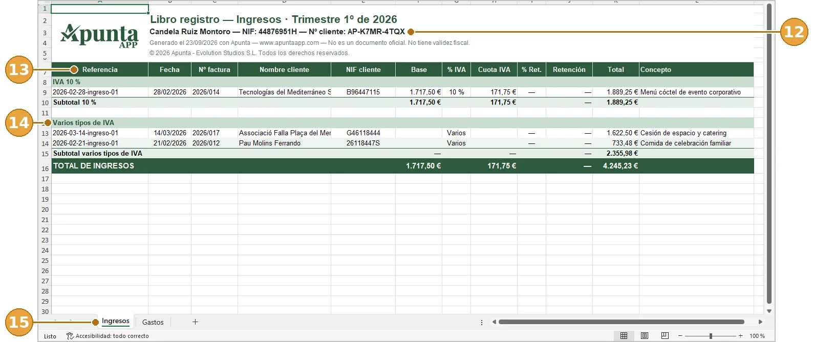
12La cabecera. Como en el PDF: nombre, NIF y número de cliente.
13Referencia. La misma del PDF y de las fotos.
14Varios tipos de IVA. El mismo grupo que en el PDF.
15Dos hojas: Ingresos y Gastos.
Es el libro registro del trimestre: una fila por apunte, con la fecha, el número de factura, el nombre y el NIF, la base, el IVA, la retención, el total y el concepto.
Las fotos
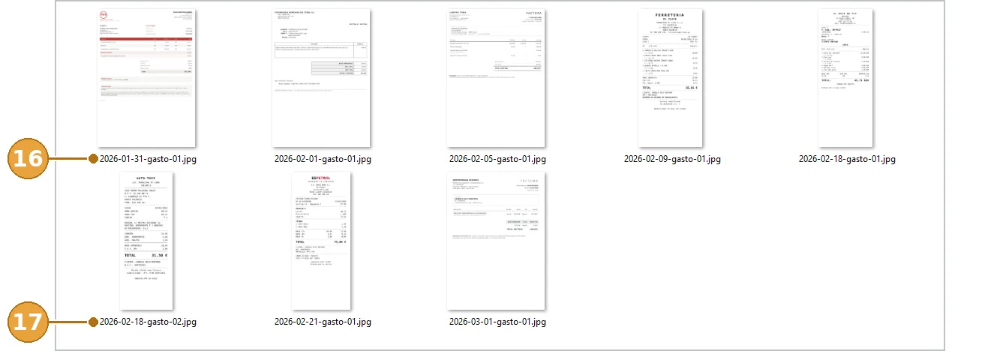
16Una foto por apunte, con la referencia del apunte como nombre.
17El taxi del capítulo 4, 2026-02-18-gasto-02. → capítulo 4
Dentro del ZIP, las fotos van en dos carpetas, gastos e ingresos. Como cada foto se llama igual que la referencia de su apunte, tu gestor encuentra la de cualquier línea del PDF o del Excel sin abrirlas una a una. El ZIP lleva también el PDF, el Excel y apunta.dat, un fichero cifrado para el programa de tu gestor. Dentro van tus datos (nombre, NIF y número de cliente), el trimestre y, de cada apunte, su tipo de IVA y el texto que leyó la app del papel.
Capítulo 9
Tus datos y tu número de cliente
En Ajustes, arriba del todo, están los datos para el gestor: lo que viaja en cada exportación para que tu gestor sepa de quién es.
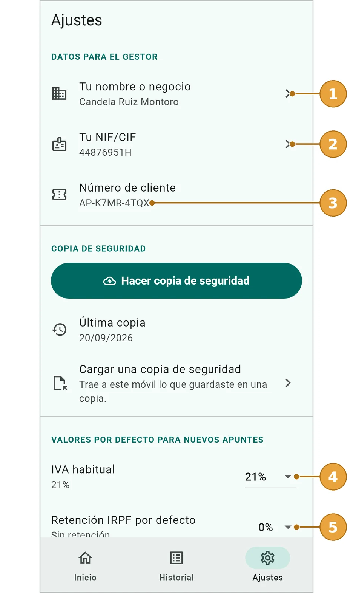
1Tu nombre o negocio. Como quieras que aparezca en la exportación. Púlsalo para escribirlo o cambiarlo.
2Tu NIF/CIF. Además de ir en la exportación, le sirve a la app para saltarse tu NIF cuando lee una factura y quedarse con el del proveedor.
3Número de cliente. Tu código de Apunta App, del tipo AP-XXXX-XXXX. No tienes que hacer nada con él: viaja en cada exportación y así tu gestor sabe de quién es, aunque tenga muchos clientes con la app.
4IVA habitual.
5Retención IRPF por defecto. Estos dos son los valores con los que parten tus apuntes nuevos. Si casi todas tus facturas llevan el mismo IVA o la misma retención, déjalos puestos aquí.
Consejo
Si tu gestor te pregunta por tu número de cliente, lo tienes aquí. Y también sale en la cabecera del PDF y del Excel. → capítulo 8
Estos datos, como todo lo demás, no salen de tu móvil. Solo los ve tu gestor, cuando tú le mandas una exportación.
Capítulo 10
La copia de seguridad
Atención
Tus apuntes solo están en tu móvil. Es lo que los hace privados, pero también quiere decir que si pierdes el teléfono, se te rompe o desinstalas la app, se van con él. La copia de seguridad es lo único que los salva.
La copia está en Ajustes, un poco más abajo de tus datos.
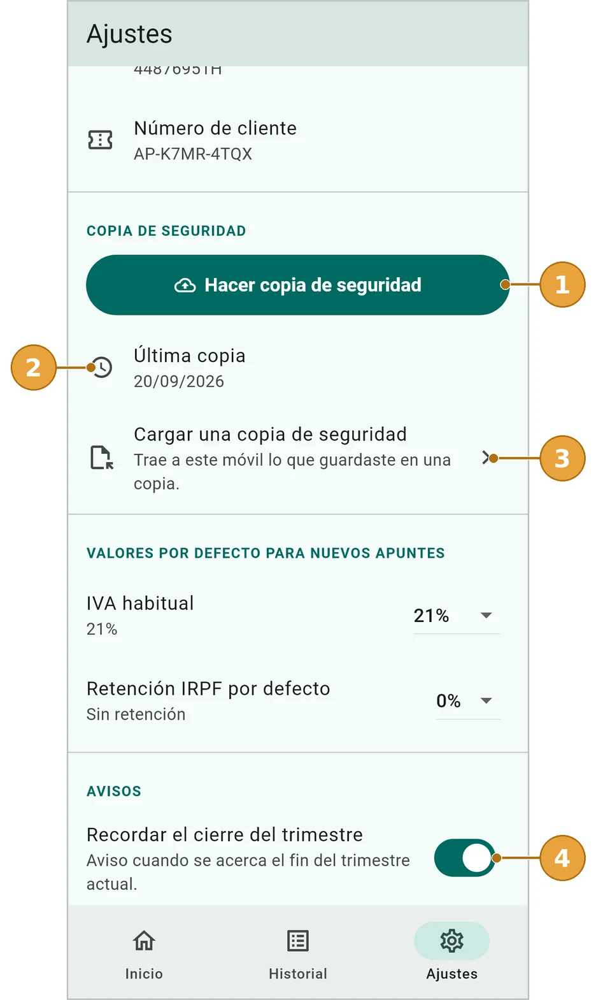
1Hacer copia de seguridad. Hace una copia de todo lo que tienes en la app, cifrada con una contraseña que eliges tú.
2Última copia. El día de la última vez. Si hace mucho, haz una.
3Cargar una copia de seguridad. Trae a este móvil lo que guardaste en una copia. Es lo que usas al cambiar de teléfono.
4Recordar el cierre del trimestre. La app te avisa cuando se acerca el fin del trimestre: buen momento para exportar y para hacer copia.
Cómo se hace
Al pulsar Hacer copia de seguridad, la app te pide una contraseña de al menos 6 caracteres y cifra la copia con ella. Puede recordarla para la próxima vez. Cuando la copia está lista, tienes dos botones:
Compartir la copia abre la ventana de compartir del teléfono, para mandártela por correo, a tu ordenador o a donde guardes tus cosas.
Guardar en el móvil abre la ventana del teléfono para elegir una carpeta.
El fichero se llama «Copia de seguridad ApuntaApp movil» seguido de la fecha.
Atención
Apunta la contraseña en un sitio seguro. La copia va cifrada: sin la contraseña no se puede abrir, y nadie puede recuperarla por ti.
Cuándo hacerla
Una costumbre sencilla: cada vez que le mandes un trimestre a tu gestor, haz también una copia. Y si apuntas mucho, una vez por semana.
Consejo
Guarda la copia fuera del teléfono. Usa «Compartir la copia» para mandártela a tu correo o a tu ordenador. Una copia que se queda en el mismo móvil se pierde con él.
Al cambiar de móvil
Instala Apunta App en el móvil nuevo y, en la primera pantalla, pulsa Cargar mi copia de seguridad. → capítulo 2
Si ya habías empezado a usarla en el móvil nuevo, tienes lo mismo en Ajustes ③.
Atención
Cargar una copia sustituye todo lo que haya en el móvil: facturas, fotos y ajustes. No mezcla. La app te lo pide confirmar con el botón «Sustituir». Lo único que no cambia es el número de cliente, que se queda el del móvil donde cargas la copia.
Capítulo 11
Preguntas frecuentes
Al final de Ajustes tienes la ayuda, los textos legales y la versión de la app.
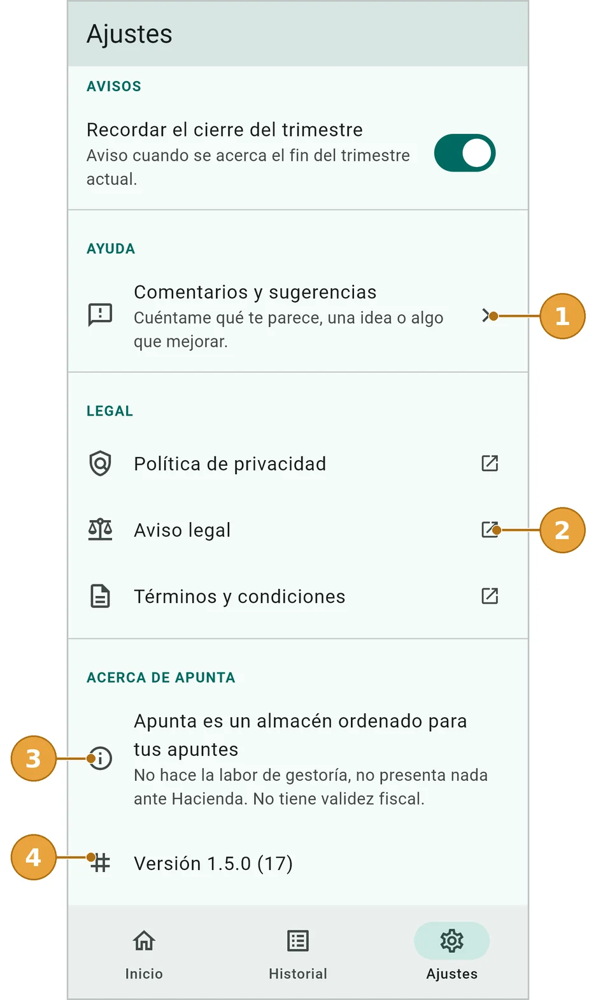
1Comentarios y sugerencias. Para contarnos qué te parece, una idea o algo que mejorar.
2Legal. Política de privacidad, aviso legal y términos y condiciones. Se abren aparte.
3Acerca de. Lo que es la app, y lo que no.
4Versión. Si nos escribes por un problema, dinos qué versión tienes: la ves aquí.
¿Necesito internet?
No. La app lee las facturas en el propio móvil. Solo te hará falta conexión para mandarle la exportación a tu gestor por WhatsApp o por correo.
¿Alguien más ve mis facturas?
No. No hay cuenta ni nube: tus apuntes no salen del teléfono hasta que tú exportas un trimestre y se lo mandas a tu gestor.
La app ha leído mal un importe. ¿Qué hago?
Corrígelo en la revisión, antes de guardar. Casi siempre es por la foto: poca luz, movida o desenfocada. Si quieres ver qué leyó el teléfono, pulsa «Ver texto detectado por OCR» al final de la revisión. Si ya lo habías guardado, ábrelo desde el historial. La foto va siempre con el apunte, así que tu gestor puede comprobarlo. → capítulo 4
¿Por qué me sale «Esta fecha es de otro trimestre»?
Porque la fecha del papel no es del trimestre en el que estamos. Si la fecha está bien, déjala: el apunte irá a su trimestre. → capítulo 4
¿Por qué el IVA a liquidar sale en negativo?
Porque ese trimestre has pagado más IVA del que has cobrado. → capítulo 6
Me ha llegado una factura en PDF por correo. ¿Puedo apuntarla?
Sí: en Inicio, con Subir foto/PDF guardado en el móvil. Si el PDF trae el texto dentro, la app lo usa directamente. → capítulo 3
¿Por qué no rellena el nombre del proveedor?
Porque la app no lo lee: lee el NIF, pero el nombre, el concepto y el número de factura de un gasto los escribes tú. → capítulo 4
Voy a cambiar de móvil. ¿Pierdo mis apuntes?
No, si haces antes una copia de seguridad y la cargas en el móvil nuevo. → capítulo 10
Atención
Si pierdes el móvil sin haber hecho copia, pierdes los apuntes que tenías en él. Nadie más los tiene, ni siquiera nosotros. Lo que ya le habías mandado a tu gestor lo conserva él.
He olvidado la contraseña de la copia de seguridad.
Sin ella, esa copia no se puede abrir. Si todavía tienes los apuntes en el móvil, haz una copia nueva con otra contraseña y apúntala bien. → capítulo 10
¿Lo que exporto tiene validez fiscal?
No. Es un resumen ordenado para tu gestor, no un documento oficial. Guarda los originales como te diga tu gestor.
¿Hay que pagar una cuota?
No. Apunta App se paga una vez, 49,99 €, sin cuota mensual.
¿La app presenta mis impuestos?
No. No presenta modelos a Hacienda ni sustituye a tu gestor: le lleva el trabajo hecho. → capítulo 1
Apunta... Y olvídate.
⬇ Descargar el manual en PDF© 2026 Evolution Studios S.L. Todos los derechos reservados. Queda prohibida la reproducción, distribución o modificación, total o parcial, de este manual por cualquier medio sin la autorización previa y por escrito de Evolution Studios S.L.